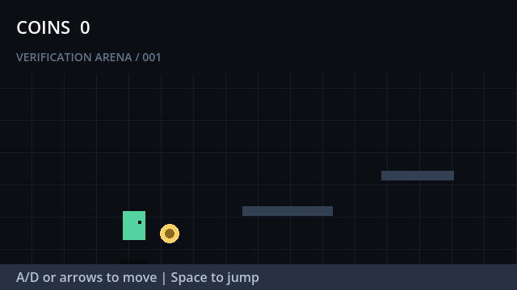

Open-source autonomous game engineering
GameBuddy
Build. Play. Prove.
A Godot-first coding agent environment that turns game requirements into runnable projects, real playtests, and reproducible evidence.
Evidence over claims
A game is not done when the code looks right.
GameBuddy launches the project, performs real inputs, observes runtime state, and checks deterministic assertions before reporting success.
Closed-loop engineering
From intent to verified behavior.
- 01UnderstandRequirements
- 02BuildGodot project
- 03RunHeadless engine
- 04PlayReal inputs
- 05ObserveState + logs
- 06RepairEvidence-guided
Designed for agents
The missing runtime layer for game coding agents.
Sandboxed project copies
Every evaluation runs against a temporary copy, leaving the original candidate project unchanged.
prepareSandbox(project)
External playtest harnesses
Benchmark-owned drivers load the game, perform actions, and emit structured runtime evidence.
GAMEBUDDY_EVENT {...}
Deterministic assertions
Movement, velocity, score, health, and other state can be evaluated without an opaque model judge.
velocity_y < 0
Machine-readable proof
Every run ends with a report.
Store it, compare it, or use failures as the next repair prompt.
{
"task_id": "platformer_basic_001",
"build_success": true,
"runtime_success": true,
"functional_score": 1,
"total_score": 1
}Roadmap
Small core. Serious trajectory.
MIT licensed. Godot-first. Built in public.